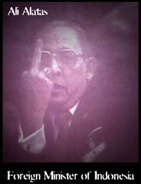

Benvindo ao Ministério dos Negócios Estrangeiros
da
República Fascista da Indonésia.

Dresden, Germany - April 1995
Photo by: Claus Dieter Rohl
This is not a fake picture. This is a photo of Mr.Alata's reaction to the protesters for the freedom of the East Timor resistance leader, Xanana Gusmao, in Germany.
Is this the man who wants to be the next general-secretary of the UN ?
We don't think so.
All we can say to Mr. Alatas and Mr. Suharto is:
'East Timor is not Indonesia.'
'Free Xanana Gusmao'.
Who
do you believe? Ali Alatas or the two winners of the noble peace
prize, Ramos Horta and Bishop Belo? Make your choice.
In the 12th November 1996, five years have gone since the Santa Cruz massacre,
where 250 Timorese were killed by the indonesian army. We want to remember
on this date the Timorese cause, and what better means of free speach than
the Internet to achieve this purpose?
No dia 12 de Novembro passaram cinco anos sobre o Massacre de Santa Cruz, em que morreram 250 jovens timorenses às mãos do exército ocupante indonésio. Na Internet, espaço de liberdade, queremos marcar a data relembrando a causa do povo timorense.
DISCLAIMER: This action has nothing to
do with TimorNEt, Timor HomePage, East Timor Resistence or any other domain,
Political Group in Portugal or any other country. This page was modified
by the Toxyn Group.
East
Timor Torture Photos
Hacked on 11 February 1996 by TOXYN